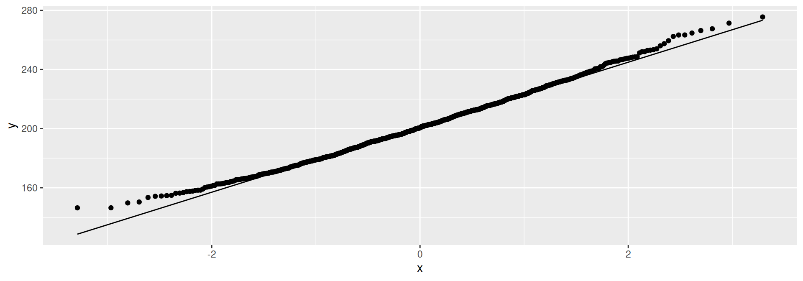

Source: Hesterberg et al (link)
# A tibble: 1,000 × 2
# Rowwise:
sim boot_sample
<int> <list>
1 1 <dbl [30]>
2 2 <dbl [30]>
3 3 <dbl [30]>
4 4 <dbl [30]>
5 5 <dbl [30]>
6 6 <dbl [30]>
7 7 <dbl [30]>
8 8 <dbl [30]>
9 9 <dbl [30]>
10 10 <dbl [30]>
# ℹ 990 more rowstibble(sim = 1:1000) %>%
rowwise() %>%
mutate(boot_sample = list(sample(irs$Time, replace = TRUE))) %>%
mutate(my_mean = mean(boot_sample)) -> samples
samples# A tibble: 1,000 × 3
# Rowwise:
sim boot_sample my_mean
<int> <list> <dbl>
1 1 <dbl [30]> 196
2 2 <dbl [30]> 202.
3 3 <dbl [30]> 263.
4 4 <dbl [30]> 173.
5 5 <dbl [30]> 204.
6 6 <dbl [30]> 197.
7 7 <dbl [30]> 210.
8 8 <dbl [30]> 160.
9 9 <dbl [30]> 198.
10 10 <dbl [30]> 178.
# ℹ 990 more rowsmight be better than a histogram:
There are two ways (at least). First way:
# A tibble: 2 × 4
limit o_t b_t b_p
<chr> <dbl> <dbl> <dbl>
1 LCL 155. 157. 163.
2 UCL 247. 246. 247.bootstrap package.# A tibble: 2 × 5
limit o_t b_t b_p b_bca
<chr> <dbl> <dbl> <dbl> <dbl>
1 LCL 155. 157. 163. 162.
2 UCL 247. 246. 247. 254.Recall the soap data:
# A tibble: 27 × 4
case scrap speed line
<dbl> <dbl> <dbl> <chr>
1 1 218 100 a
2 2 248 125 a
3 3 360 220 a
4 4 351 205 a
5 5 470 300 a
6 6 394 255 a
7 7 332 225 a
8 8 321 175 a
9 9 410 270 a
10 10 260 170 a
# ℹ 17 more rows
Pearson's product-moment correlation
data: speed and scrap
t = 15.829, df = 10, p-value = 2.083e-08
alternative hypothesis: true correlation is not equal to 0
95 percent confidence interval:
0.9302445 0.9947166
sample estimates:
cor
0.9806224 speed and scrap:1000 times:
2.5% 97.5%
0.9415748 0.9962462 bcanon, write a function that takes a vector of row numbers and returns the correlation between speed and scrap for those rows:[1] 0.9928971# A tibble: 3 × 4
case scrap speed line
<dbl> <dbl> <dbl> <chr>
1 16 140 105 b
2 17 277 215 b
3 18 384 270 b bcanon are now:
line_b)# A tibble: 2 × 4
limit o_c b_p b_bca
<chr> <dbl> <dbl> <dbl>
1 LCL 0.930 0.942 0.931
2 UCL 0.995 0.996 0.995cor.test uses the Fisher \(z\) transformation which “spreads out” correlations close to 1).
Comments